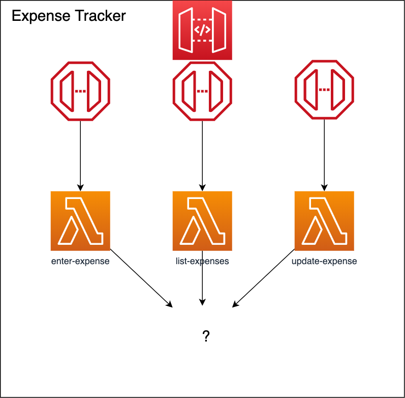

DynamoDB - a serverless database
So far so good. Now that we know how to discover if a problem occurs, we can continue.
After creating the API Gateway endpoints, the "Sauf Pompiers" SARL folks want us to actually store and list the receipts into the database. Which database and how do we do that with an AWS Lambda?
You can see what we did so far in the following diagram.

Now we need a database to fulfill what we promised. But how do we store state within a serverless environment? We can connect each of our Lambda's to the current database we use (on-premise / RDS) but what seems to be the problem here?
It can scale from 0 to 1000 concurrent connections, from day one.
AWS Lambda, as a Function as a Service, tends to scale independently and massively, by default up to 1000 concurrent invocations per one Lambda. And how many DB connections do we have usually on a project?
Our databases should be able to scale as well. But this contradicts our Serverless Model - Pay per Use. Let's take an example that we had a full-blown serverless database, a Serverless RDS. That would also be against our model.
Do you know why?
Take some time to think about the answer.
It's because we are scaling unneeded infra for the data we don't need!
Imagine you have a 100GB database. To make it scalable, you would need to instantly load up or cache such a quantity of data, or some other shenanings. Of course, that is possible, if we hide away all of such mechanics as well, as you might have heard about Serverless Aurora, but regardless we need a different approach.
Now that you know why do we need a different approach, we need to ask ourselves what would be an equivalent in the concept of a Function as a Service.
A data table as a service.
Do we know such a service?
And as some of you may have already guessed, its DynamoDB.
DynamoDB
As you can read from the AWS website it is:
Amazon DynamoDB is a key-value and document database, fully managed, multiregion, ultimaster, durable database with built-in security, backup and restore, and in-memory caching for internet-scale applications. DynamoDB can handle more than 10 trillion requests per day and can support peaks of more than 20 million requests per second.
Seems good, but how do we use it?
Here is an example with CloudFormation:
DynamoDBTable:
Type: AWS::DynamoDB::Table
Properties:
TableName: "YourTableName"
AttributeDefinitions:
- AttributeName: "YourTableNameId"
AttributeType: S
KeySchema:
- AttributeName: "YourTableNameId"
KeyType: HASH
BillingMode: PAY_PER_REQUEST
SSESpecification:
SSEEnabled: True
What are all these properties? You can guess some, but some are quite intruiging.
AttributeDefinitions, simply a list of attributesKeySchema, the keys schema for all the database keysBillingMode, configures how you want to pay for DynamoDB, two available options arePROVISIONEDandPAY_PER_REQUEST.SSESpecification, one of the most important, enables Server Side Encryption.
But what is most interesting is actually the Type. We are actually creating AWS::DynamoDB::Table - a table, not a whole database.
Most importantly, it is a NoSQL database, with support of Primary Indexes, Secondary Indexes, and Sort Indexes.
Indexes
What are these indexes and how do work?
Amazon DynamoDB provides fast access to items in a table by specifying primary key values. But if you want to fetch the data of attributes other than the primary key, indexing comes into the picture. Most of you know that, so let's jump into the DynamoDB details.
Now, what is a primary, and what is a secondary index?
A primary index is an index on a set of fields that includes the unique primary key and is guaranteed not to contain duplicates. In contrast, a secondary index is an index that is not a primary index and may have duplicates.
AWS DynamoDB offers both Local and Global Secondary Indexes.
Global Secondary Index − This index includes a partition key and sort key, which may differ from the source table. It uses the label “global” due to the capability of queries/scans on the index to span all table data, and over all partitions.
Local Secondary Index − This index shares a partition key with the table, but uses a different sort key. Its “local” nature results from all of its partitions scoping to a table partition with identical partition key value.
Now we're ready to jump into actually get our Lambda to interact with DynamoDB.
How to use a DynamoDB with AWS Lambda
To get our Lambda code to get /store data from a DynamoDB Table, we need to use the AWS SDK. Here are some example AWS SDK API links for JavaScript and Java for DynamoDB.
An example JavaScript code for getting data from a DynamoDB table
await dynamoDb.scan( {
TableName: TABLE_NAME
}).promise();
And here is the example of storing data into a DynamoDB table:
await dynamoDb.put({
TableName: TABLE_NAME,
Item: {
someTableId: "value"
attr1: "value"
}
}).promise();
This looks simple enought, right?
But unfortunately, if you remember, Lambda functions are isolated and permissionless. And in this case they really don't have any permissions.
To add those you need to give a Lambda a Policy with a Statement, like this:
Properties:
Policies:
- Version: '2012-10-17'
Statement:
- Effect: Allow
Action:
- dynamodb:PutItem
Resource: !GetAtt "YourDynamoTable.Arn"
This policy allows the function to put data into the YourDynamoTable DynamoDB table, based on its ARN - which is Amazon Resource Name.
Note: You can add more than one
ActionItem, but not more than oneResource. You will need to create a separate PolicyStatementfor eachResource. Meaning that one Lambda is able to access more than one DynamoDB table. TheResourceparameter requires a ARN.
Task
This covers the basics, but for the Task you'll have a slightly elevated challenge.
This task is going to e Steps are:
- Create a DynamoDB table
expenses. - Add the permissions to the Lambda to be able to save to the database but by using AWS SAM Policy Templates.
- Implement the necessary code to save the receipt to the DynamoDB table from the
enter-expenseLambda function. - (Bonus) Enable the
list-expensesLambda to retrieve all the data from the database. - (Bonus) Enable the
update-expenseLambda to update data from the database.
Next Lesson
When you finish this, feel free to go ahead to Testing!